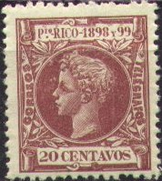
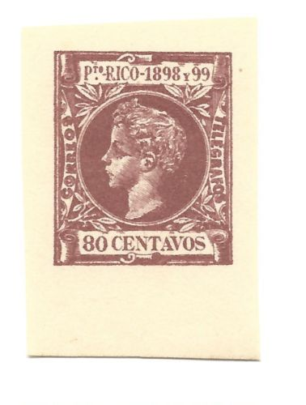
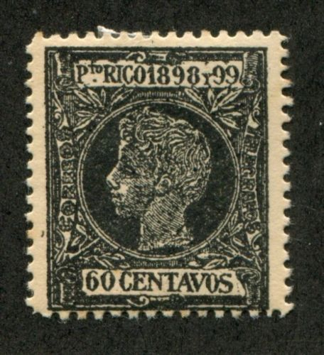
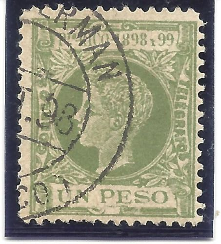
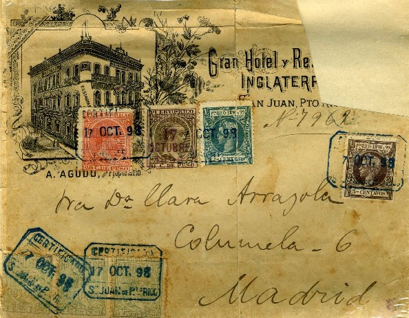
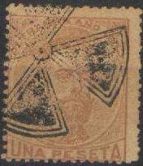
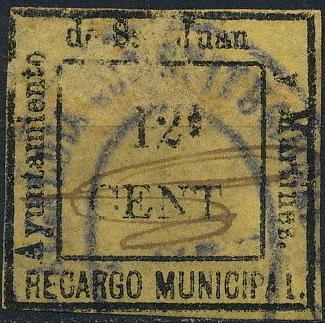

Return To Catalogue - Puerto Rico, part 1 - Puerto Rico, part 2 - Coamo
Note: on my website many of the
pictures can not be seen! They are of course present in the
catalogue;
contact me if you want to purchase the catalogue.
Inscription '19 novembre 1493-1893 Puerto-Rico 3 Centavos de Peso' 3 c green
Value of the stamps |
|||
vc = very common c = common * = not so common ** = uncommon |
*** = very uncommon R = rare RR = very rare RRR = extremely rare |
||
| Value | Unused | Used | Remarks |
| 3 c | R | *** | |
A Fournier forgery in blue:
This forgery was probably not intended to deceive, but merely to illustrate Fournier's pricelists. When 'The Fournier Album of Philatelic Forgeries' was made, impressions of all the dies were made and pasted in this album to warn collectors against the Fournier forgeries. This die was also included and the stamp printed in blue.


1 m brown 2 m brown 3 m brown 4 m brown 5 m brown 1 c violet 2 c green 3 c brown 4 c orange 5 c red 6 c blue 8 c brown 10 c red 15 c olive-green 20 c lilac 40 c violet 60 c black 80 c brown 1 p green 2 p blue
Value of the stamps |
|||
vc = very common c = common * = not so common ** = uncommon |
*** = very uncommon R = rare RR = very rare RRR = extremely rare |
||
| Value | Unused | Used | Remarks |
| 1 m | c | * | |
| 2 m | c | * | |
| 3 m | c | * | |
| 4 m | ** | ** | |
| 5 m | c | * | |
| 1 c | c | * | |
| 2 c | c | * | |
| 3 c | c | c | |
| 4 c | *** | *** | |
| 5 c | c | * | |
| 6 c | c | * | |
| 8 c | * | * | |
| 10 c | * | * | |
| 15 c | * | * | |
| 20 c | * | ** | |
| 40 c | * | ** | |
| 60 c | ** | *** | |
| 80 c | ** | *** | |
| 1 P | *** | R | |
| 2 P | R | R | |
Stamps in a similar design were issued for the Elobey, Annobon and and Corisco; Fernando Poo; Philippines; Puerto Rico; Spanish Guinea and Rio de Oro.
Bogus overprints, example:
(reduced size, overprint 'Habilitado 4 ctvs.' in violet on 5 m)
Forged imperforate stamps (made in 1910?), most likely made by the forger Segui:



(Forgeries)
(Left crude forgery, right genuine 60 c stamp)

Here four crude forgeries of the 40 c, 60 c, 80 c and 1 Peso.


Another crude 1 P forgery and a pair of 60 c forgeries.
Fournier also made forgeries of these stamps. I have seen them uncancelled, imperforate and with cancels 'PLAYA DE MAYAGUEZ 10 NOV.98 (PTE RICO)' and 'SAN GERMAN 10 OCT.98 (PTO RICO)'. If anybody has a picture of a Fournier forgery, please contact me!
The two forged Fournier cancels as found in 'The Fournier Album
of Philatelic Forgeries', reduced sizes.
Page of a Fournier Album with forged stamps, cancels and
overprints.

Fournier forgery with forged Fournier cancel.

(overprint '1898 PROVISIONAL 1899')
These bogus overprints are discussed in Album Weeds. The overprints are "1898 PROVISIONAL 1899", "HABILITADO 17 OCTUBRE 1898" on the babyface issue and "Habilitado 4 ctvs" on the 1898 issue.

'HABILITADO 17 OCTUBRE 1898' overprint
The status of these overprints is quite dubious. The next image shows an envelope kindly set at my disposal by Sebastien Lafitte, which has one stamp with overprint 'HABILITADO 17 OCTUBRE 1898' and a cancel 'CERTIFICADO 17 OCT 98 S.JUAN DE PTE RICO', which appears to have been used genuinely:



Zoom-in of the stamps on the envelope
Typical cancel, ellipse with stars.
I've been told that this cancel is from Puerto Rico, it could be a forged cancel:

Examples, revenue stamps with inscription 'RECIBOS Y CUENTAS PUERTO-RICO' with red 'US' overprint:

I've seen a 'GIRO' fiscal stamp (tall format, similar to those issued in Spain), with inscription 'ISLA DE PTO RICO'; 5 c green, 15 c red (other values might exist):

{kind=link}
{kind=link}
{kind=link}
{kind=link}